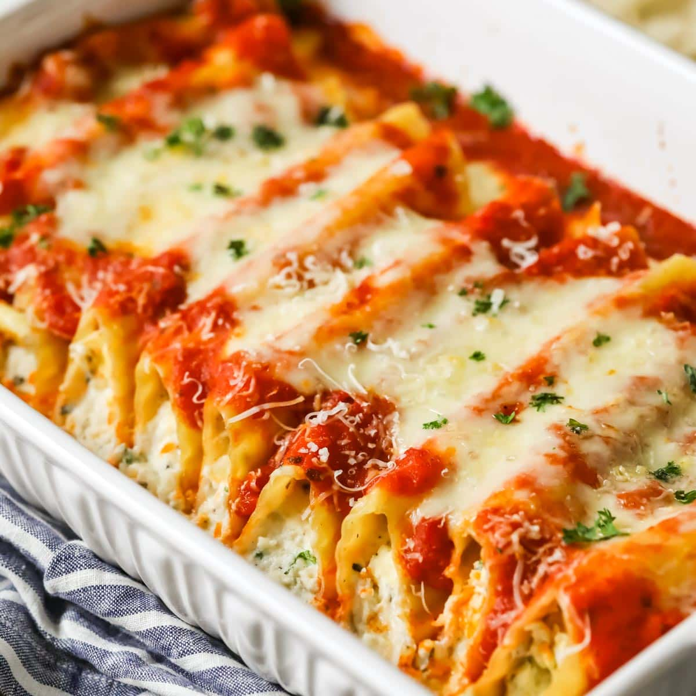

Manicotti

Description
Delicious cheese-stuffed pasta covered in a tomato sauce that tastes even better as leftovers.
Another one of my favorite foods from home. Note:recipe greatly simplified for time
Ingredients
- Manicotti Pasta
- Cheese Stuffing
- Tomato Sauce
- Parmasean
- Parsely
Steps
- Boil manicotti pasta until flaccid.
- Prepare cheese stuffing and tomato sauce.
- Stuff manicotti pasta with cheese stuffing and place in dish.
- Cover with tomato sauce, parmasean cheese, and parsley.
- Cover pan with foil and bake in oven at 400 for 1 hour.
- Enjoy!
Home